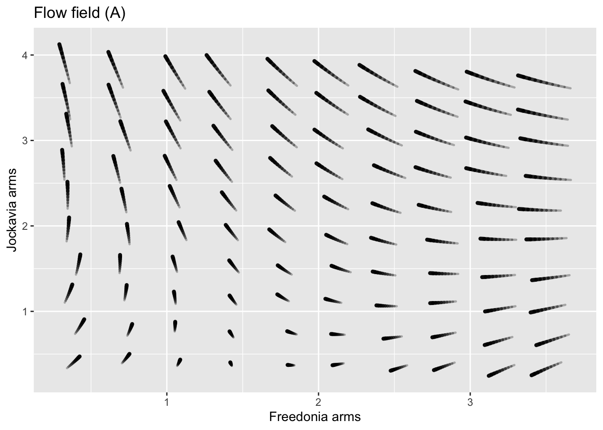
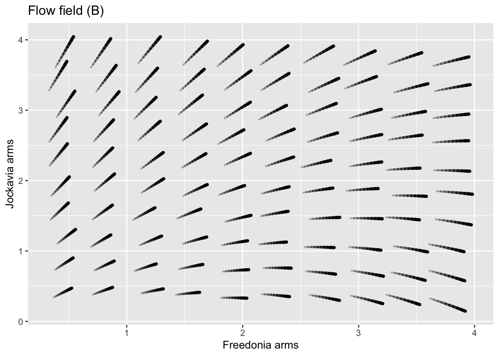
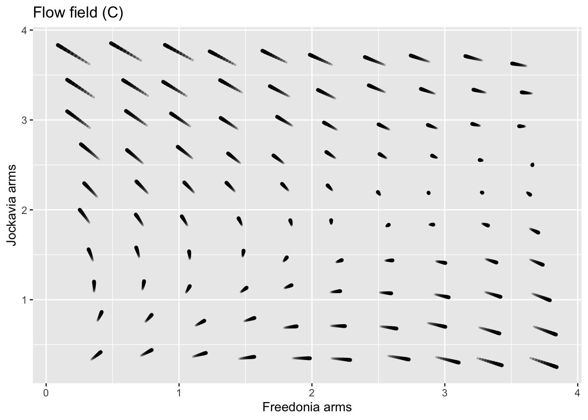

Lewis Fry Richardson (1881-1953) was an English scientist who worked in many areas, including weather prediction. This problem concerns a model Richardson built to account for arms races between countries.
In the model, \(x\) and \(y\) respectively refer to the size of the military of the two countries. The equations model how the size of the militaries change in time:\[\begin{eqnarray*} \dot{x} & = & a y - m x + r\\ \dot{y} & = & b x - n y + s\\ \end{eqnarray*}\]
The terms \(r\) and \(s\) represent the basic grievances between the two countries.
The parameters \(a\) and \(b\) represent “fear,” that is, the extent to which one country feels the need to build up arms in response to the other country’s arms.
The parameters \(m\) and \(n\) are about the internal dynamics of the country: its ability/desire to sustain a large military.

Depending on the values of the parameters \(a\), \(b\), \(m\), \(n\), \(r\), and \(s\), the Richardson dynamics can produce different outcomes. Two of the following three plots show Richardson Arms Race dynamics for two mutually fearful countries with mutual grievances, Freedonia and Jockavia. The third plot does not; the signs of one of the coefficients has been reversed and so the dynamics don’t make sense for modeling an arms race.